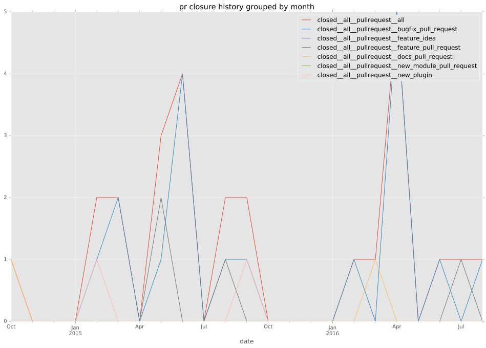

total issue counts
feature pull request: 5
pullrequest: 26
docs pull request: 2
bugfix pull request: 19
feature idea: 5
issue: 23
new plugin: 1
bug report: 17
issue history
pullrequest history

days open by issue type
bugfix pull request
count: 36
std: 9.51389960607
min: 0
max: 51
median: 2.5
mean: 5.33333333333
all
count: 62
std: 88.1338115975
min: 0
max: 473
median: 3.0
mean: 32.1451612903
pullrequest
count: 0
std: nan
min: nan
max: nan
median: nan
mean: nan
docs pull request
count: 4
std: 4.04145188433
min: 1
max: 8
median: 4.5
mean: 4.5
feature pull request
count: 8
std: 25.3095126103
min: 0
max: 55
median: 0.5
mean: 14.0
feature idea
count: 2
std: 334.461507501
min: 0
max: 473
median: 236.5
mean: 236.5
issue
count: 0
std: nan
min: nan
max: nan
median: nan
mean: nan
new plugin
count: 2
std: 0.0
min: 80
max: 80
median: 80.0
mean: 80.0
bug report
count: 10
std: 142.688316114
min: 0
max: 413
median: 33.5
mean: 103.8
closures grouped by total days open